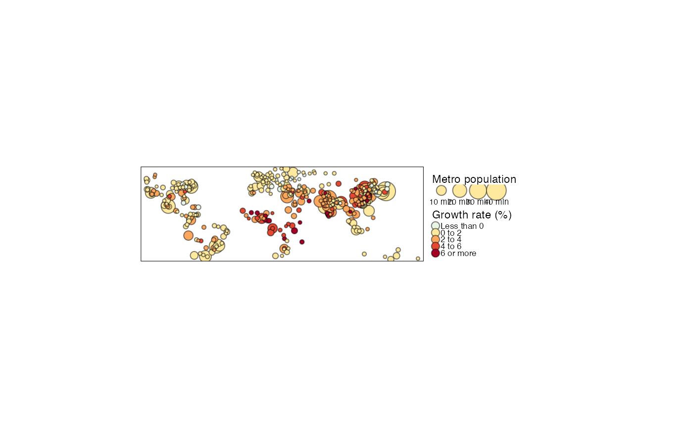

Set the options for the interactive tmap viewer. Some of these options can also be set with tm_layout, since they are style dependent (e.g., the choice of basemaps). The function tm_view overrides these options when specified.
tm_view( alpha, colorNA, projection, symbol.size.fixed, dot.size.fixed, text.size.variable, bbox, set.bounds, set.view, set.zoom.limits, view.legend.position, control.position, legend.position, leaflet.options )
| alpha | transparency (opacity) parameter applied to whole map. By default, it is set to |
|---|---|
| colorNA | default color for missing values in interactive mode. If the color of missing values is not defined in the layer functions (e.g. |
| projection | projection. Either a EPSG number, or a |
| symbol.size.fixed | should symbol sizes be fixed while zooming? |
| dot.size.fixed | should dot sizes be fixed while zooming? |
| text.size.variable | should text size variables be allowed in view mode? By default |
| bbox | bounding box. One of the following:
If set, it overrides |
| set.bounds | logical that determines whether maximum bounds are set, or a numeric vector of four values that specify the lng1, lat1, lng2, and lat2 coordinates (see |
| set.view | numeric vector that determines the view. Either a vector of three: lng, lat, and zoom, or a single value: zoom. See |
| set.zoom.limits | numeric vector of two that set the minimum and maximum zoom levels (see |
| view.legend.position | Character vector of two values, specifying the position of the legend. Use "left" or "right" for the first value and "top" or "bottom" for the second value. It overrides the value of |
| control.position | Character vector of two values, specifying the position of the layer control UI. Use "left" or "right" for the first value and "top" or "bottom" for the second value. |
| legend.position | not used anymore, renamed to view.legend.position |
| leaflet.options | other options passed on via |
Tennekes, M., 2018, tmap: Thematic Maps in R, Journal of Statistical Software, 84(6), 1-39, doi: 10.18637/jss.v084.i06
# world choropleth/bubble map of the world data(World, metro) metro$growth <- (metro$pop2020 - metro$pop2010) / (metro$pop2010 * 10) * 100 map1 <- tm_shape(metro) + tm_bubbles("pop2010", col = "growth", border.col = "black", border.alpha = .5, style="fixed", breaks=c(-Inf, seq(0, 6, by=2), Inf), palette="-RdYlBu", contrast=1, title.size="Metro population", title.col="Growth rate (%)", id="name", popup.vars=c("pop2010", "pop2020", "growth")) + tm_legend(outside=TRUE) current.mode <- tmap_mode("plot")#># plot map map1#>#>map1#>#># view map with changed view options map1 + tm_view(set.view = c(7, 51, 4)) # longitude 7, latitude 51, zoom 4#>#># interactive world map in original CRS tm_shape(World) +tm_polygons("HPI") + tm_view(projection = 0) + tm_basemap(NULL) # restore current mode tmap_mode(current.mode)#>